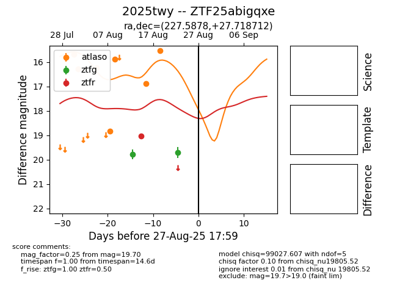

Target 2025twy at 2025-08-27 17:59, see:
FINK: fink-portal.org/ZTF25abigqxe
Lasair: lasair-ztf.lsst.ac.uk/objects/ZTF25abigqxe
ALeRCE: alerce.online/object/ZTF25abigqxe
TNS: wis-tns.org/object/2025twy
YSE: ziggy.ucolick.org/yse/transient_detail/2025twy
alt names
ZTF25abigqxe (ztf,fink)
2025twy (tns,yse)
coordinates:
equatorial (ra, dec) = (227.5878,+27.71871)
galactic (l, b) = (42.1907,+59.27176)
photometry
last atlaso=15.54, ztfg=19.70, ztfr=19.03
7 atlaso, 2 ztfg, 1 ztfr detections
